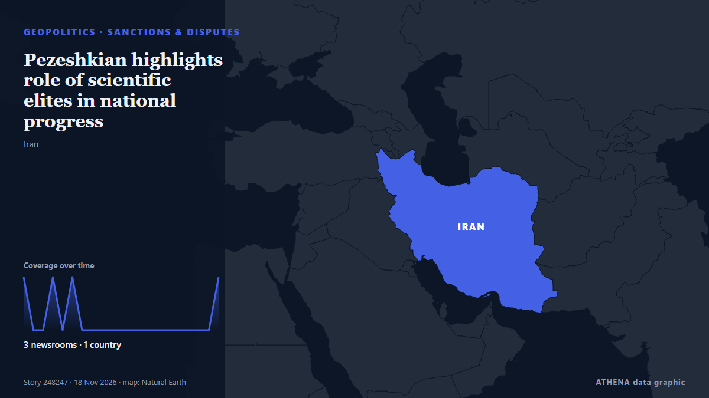

Sanctions & disputes
SponsoredPresented by  Cybernetics and Artificial Intelligence Lab Welcome to the Cybernetics and Artificial Intelligence Laboratory, established at the Department of Business Administration of the National and Kapodistrian University of Athens. The lab is headed by Professor Dimitrios Thomakos. The lab aims to do research that can be published in top venues. Our research uses tools and methods of Artificial Intelligence, and lies in the following areas: - Forecasting - Decision making - Cyber security - Finance We are always looking forward to collaborating with exceptional students!
Cybernetics and Artificial Intelligence Lab Welcome to the Cybernetics and Artificial Intelligence Laboratory, established at the Department of Business Administration of the National and Kapodistrian University of Athens. The lab is headed by Professor Dimitrios Thomakos. The lab aims to do research that can be published in top venues. Our research uses tools and methods of Artificial Intelligence, and lies in the following areas: - Forecasting - Decision making - Cyber security - Finance We are always looking forward to collaborating with exceptional students!
| 5 Nov | 0 |
|---|---|
| 6 Nov | 0 |
| 7 Nov | 0 |
| 8 Nov | 0 |
| 9 Nov | 0 |
| 10 Nov | 0 |
| 11 Nov | 1 |
| 12 Nov | 0 |
| 13 Nov | 0 |
| 14 Nov | 1 |
| 15 Nov | 1 |
| 16 Nov | 7 |
| 17 Nov | 3 |
| 18 Nov | 0 |

Pezeshkian highlights role of scientific elites in national progress
President Masoud Pezeshkian has said that no obstacle can prevent Iran from progressing or bring the country to its knees as long as it draws on the capabilities of its scientists, experts, and… from Tehran Times
Sri Lanka docked 15 WTC points for slow over rate, Pakistan gets five points deducted
Besides the point deductions, Pakistan players were fined 25 per cent of their match fee while the Sri Lankans were fined 50 per cent. from Sportstar
Bulgaria gets two Russian banks removed from proposed EU sanctions list
Two Russian banks with majority Bulgarian ownership have been removed from the EU sanctions list and no restrictive measures will. from The Sofia Globe
EU clamps down on Wildberries owner, 50 banks, oil, and shadow fleet with new Russia sanctions
The EU's latest listings go beyond Russia to enforce EU sanctions, targeting oil buyers in China, the United Arab Emirates, the Seychelles, and Oman. from Kyiv Independent
EU sanctions Russia's richest woman Tatyana Kim over Ukraine war
The draft new sanctions list includes Russia's richest woman, Tatyana Kim, as well as dozens of Russian banks and propagandists, with both France and Germany saying that the extra sanctions were… from EUobserver
EU sanctions 113 Russian individuals, entities
The European Council announced on Monday that it expanded the list of sanctioned Russian individuals and entities by 113, including the e-commerce giant Wildberries and almost 50 banks and financial… from AzerNews
Von der Leyen says EU preparing 22nd Russia sanctions package
European Commission President Ursula von der Leyen said on Thursday that the EU was preparing its 22nd sanctions package against Russia, with a proposal expected before the next European Council… from AzerNews
'Blockade is suffocating us': Cubans use Havana marathon to protest US sanctions
Thousands of people have run in Cuba’s Marabana marathon, using the event to protest U.S. economic sanctions. from ABC News (International)